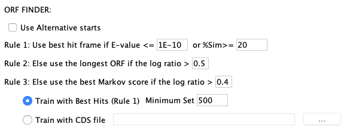
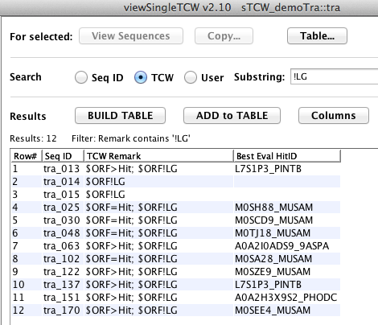
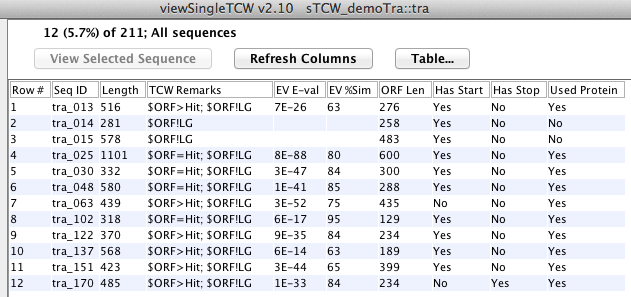
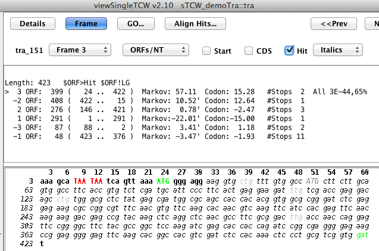
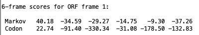

This document discusses the TCW ORF finder.
Contents:
- ORF Finder
- Algorithm
- Executing the ORF finder
- Output file
- Summary of results
- viewSingleTCW - Viewing the ORFs
- TCW ORF finder and Trinity TransDecoder
- References
ORF Finder
The runSingleTCW annotation step computes the best ORF for each sequence using the annotation hits,
5th-order Markov model2,3 and length of candidate ORF. It outputs a protein sequence for
every transcript. This document has been updated for v3.3.4.
|
runSingleTCW has an Option menu that allows the user to
set the ORF options, which is shown on the right.
This ORF finder algorithm was designed to find the 'best' ORF for input into runMultiTCW.
However, a file of all the 'good' ORFs is output (see Output files).
|

Figure 1: The runSingleTCW ORF finder options.
|
The algorithm for computing the best ORF for a given sequence is:
1. For each of the 6 frames, find the best ORF as follows:
If there is a good hit (E-value < N or %HitSim>=M), use the hit frame.
If the hit terminates with a Start and Stop codon, use the corresponding coordinates.
Else compute all ORFs surrounding the hit and select the best based on the Rules.
If there is not a good hit, find all possible ORFs and select the best based on the Rules.
2. From the 6 ORFs found in Step 1, find the best ORF using all Rules.
Rules
When comparing two ORFs, the following rules are applied in order.
☞ Rule 1: Use best hit frame if E-value < N or %HitSim>=M.
☞ Rules 2: Compute lgLen=log ratio of the lengths and 3: lgMk=log ratio of Markov scores.
Evaluate the following in order:
- If (lgLen>len-cutoff && (len1>100 || len2>100)) use ORF with longest length
- If (lgMK>MK-cutoff && (Mk1>10.0 || Mk2>10.0)) use ORF with best Markov score
- If (lgLen>len-cutoff) use ORF with longest length
- If (lgMK>MK-cutoff) use ORF with best Markov score
☞ Rule 4: Use the ORF with start and stop codons.
☞ If all else fails: Use a poor hit frame or the longest ORF.
The Markov model is trained using either of following:
- Train with Best Hits (E-value <= N or %HitSim >= M). Minimum Set [default 500]
There must be at least Minimum Set sequences that pass
the E-value and %Sim
cutoffs, otherwise Rule 3 is ignored. The training set is created from the exact nucleotide regions of
hit alignments from the top longest ORFs and best hits.
- Train with CDS file [default none]
The file name of a FASTA file of nucleotide coding sequences.
Considering log ratio cutoffs using length as an example:
If the lengths of two candidate ORFs are very different, than it is best to
use the longest ORF.
To determine if their lengths are 'very' different,
the log length ratio is used.
For example, in the Table 1 on the right, the 0.3, 0.4 and 0.5 are Log Ratio cutoffs.
A value of 'T' indicates that the longest ORF will be selected.
|
| Cutoff
|
|---|
| Length 1 | Length 2 | Log Ratio | 0.3 | 0.4 | 0.5
|
|---|
| 30 | 45 | 0.40547 | T | T | F
| | 300 | 450 | 0.40547 | T | T | F
| | 3000 | 4500 | 0.40547 | T | T | F
|
|
Markov training set
The default requires at least 500 sequences (Minimum Set). The algorithm
finds the 2000 unique longest sequences to train with; if there is not 2000, all unique sequences
will be used. The Minimum Set can be changed in the interface. The number of training sequences
can be changed by running the ORF finder from the command line, e.g.
./execAnno <project> -r -t 5000
The training set that TCW uses to create the Markov model can make a big difference in the Markov scores, hence, resulting ORFs.
If your dataset is small and there is a file of CDS sequences available, use it!
Additional heuristics
Length: An ORF must be greater than 30bp unless the sequence length is less than 30bp, then it must
be at least 9bps.
Rule 1:
- Multi-frame: The best hit frame will be used if it is a good hit, else, the hit is ignored.
- Stops in Hit: All possible ORFs are computed, and the selected one will be from those that
cover a region of the hit.
- Nucleotide Best Bit-score: The 'Best Anno' hit will be used instead (assuming its protein).
Executing the ORF finder
The ORF finder is run after the sequences are annotated (Step 3. Annotate in runSingleTCW).
If you want to change the ORF finder options and run it again, there is a "ORF only" function
in runSingleTCW. Or you can run it from the command line:
./execAnno <project> -r
Running from the command line will use the options set using runSingleTCW.
The following files are written into the <project>orfFiles directory.
Table 2. Output files of the TCW ORF finder.
| bestORFs.pep.fa | The translated CDS for the best ORF for each sequence.
|
| bestORFs.cds.fa | The CDS for the best ORF for each sequence.
|
| bestORF.scores.txt | For the best ORF for each sequence, the 6-frame scores for the ORF.
|
| allGoodORFs.pep.fa* | The translated CDSs for all good ORFs.
|
| allGoodORFs.scores.txt* | A list of the coordinates and scores for all good ORFs.
|
| scoreCodon.txt | The computed codon usage frequencies.
|
| scoreMarkov.txt | The computed 5th-order Markov model loglikelihood.
|
* Selected hit, or >= 900nt, or good Markov score (>0 and best of 6-frames for ORF).
Example of AllGoodORFs.txt, where the first one listed is the selected ORF.
### Name ntLen aaLen Type Frame Start..Stop Markov Codon
tra_002_a 2160 720 5p-partial 3 3..2162 139.08 67.16 Hit: 3E-215 52% 84% (6..2150)
tra_002_b 141 47 5p-partial 1 2269..2409 5.01 5.50
Example of bestORFs.scores.txt of the 6-frame scores for the best ORF:
>tra_002 type:5p-partial seqLen:3111 orfLen:2160 ORF:3-2162(3) Hit:2.94E-215,52%,84%
Markov 139.08 -68.93 -26.47 -51.14 -25.33 -29.83
The first Markov score is for the ORF starting at 0 (hence, the current frame),
the next two are offset by 1 and 2 respectively, the last
three are for the reverse sequence with offsets 0,1,2.
The TCW ORF finder prints out various summary statistics to the <projects>/logs/anno.log file,
and the top part of the following is in the Overview. The results below are from a RNA-seq assembled
dataset of sequences.
ORF Stats: Average length 1272
Has Hit 52,854 (99.0%) Both Ends 40,855 (76.5%) Multi-frame 12,988 (24.3%)
Is Longest ORF 41,639 (78.0%) ORF>=300 48,891 (91.5%) Stops in Hit 7,849 (14.7%)
Markov Best Score 46,046 (86.2%) ORF=Hit 32,253 (60.4%) >=9 Ns in ORF 0 (0%)
All of the above 38,628 (72.3%) with Ends 28,922 (54.2%)
Additional ORF info For seqs with hit 52,859 (99.0%) ORF=Hit with Ends 28,922 (54.2%)
One End 52,328 (98.0%) Both Ends 40,717 (77.0%) ORF>=300 28,012 (96.9%)
Markov Good Frame 47,700 (89.3%) Markov Good Frame 47,398 (89.7%) Markov Good Frame 27,792 (96.1%)
ORF=Hit 32,253 (60.4%) Markov Best Score 45,724 (86.5%) Markov Best Score 27,353 (94.6%)
ORF~Hit 7,488 (14.0%) Is Longest ORF 41,329 (78.2%) Is Longest ORF 23,328 (80.7%)
ORF>Hit 11,827 (22.1%) Longest & Markov 38,628 (73.1%) Longest & Markov 22,776 (78.7%)
with Ends 4,878 (9.1%) Not hit frame 5 Sim>=90 28,399 (98.2%)
Frame: 3(30.5%) 2(29.9%) 1(34.3%) -1( 1.9%) -2( 1.6%) -3( 1.9%)
Both Ends: Has Start and Stop codon
ORF=Hit with ends: ORF coordinates=Hit coordinates with ends
Markov Best Score: Best score from best ORF for each of 6 frames
Markov Good Frame: Score>0 and best score from 6 RFs of selected ORF
The TCW ORF finder assigns remarks to the sequence about the selected ORF
(see TCW Basic Sequence Help, which has a "TCW Remark Legend" section).
In the
images below, (A) an ORF assigned remark is searched on,
(B) the set is viewed as a Sequence table, (C) the sequence frame view and (D) the Markov scores for the best
ORF from C. Further description is provided below the set of images. Click on an image for a clearer view.
A. Basic Sequence Query for Remark

|
B. Columns of the Sequence table

|
|
C. Sequence Details Frame view

|
D. 6-frame scores for the displayed ORF

|
|
Figure 3: viewSingleTCW features for viewing the ORFs.
A. Basic Sequence Filter for TCW Remark: In
this example, the remark "!Lg" was searched on, which shows the sequences with ORFs that are not the longest.
All rows were selected and Seq Table shows them in the main Sequence table as shown in Figure 3B.
B. Columns of the Sequence table: This figure
shows most of the ORF columns. A row can be selected followed by
Seq Detail to view the frame as shown in Figure 3C.
C. Sequence Details Frame view: This example shows that the selected ORF is not the longest ORF,
but has a hit with an E-value of 3.3E-98 and good Markov and Codon scores.
D. By toggling the ORFs/NT to Scores/AA, the upper region will show the 6-frame scores of the selected ORF.
| The Markov and Codon Best Frame score is one that is positive and greater than all other frames for the ORF.
Though the Codon percentage is sometimes better than the Markov, the Markov score is much more discriminatory.
For example, when the ORF finder was executed with a file of UTRs as input, the table on the right show the
difference.
|
Table 3: Training with CDS vs UTRs
| Input | Markov | Codon
| | Hit Regions | 17783 (85%) | 19518 (93%)
| | UTRs | 5832 (28%) | 13370 (64%)
|
|
TCW ORF finder and Trinity TransDecoder
| Go to top |
Markov is the 5th-order Markov model as computed by TransDecoder3 and
originally used in GeneID2.
The TransDecoder2 Perl code for computing the reading frame specific
5th-order Markov model was translated to Java for the TCW ORF finder. However, they use different
training sets, so their scores tend to be different. They are the same +/-0.02 if either of the following
is done: (1) Use the TransDecoder longest_orfs.cds.top_500_longest as the TCW CDS file
and run ./execAnno <project> -f -r.
(2) Use the TCW orfFiles/bestORFs.cds.fa file as input to the TD score_CDS_likelihood_all_6_frames.pl
program. In either case, compare the TransDecoder longest_orfs.cds.scores (.p1 only) with the
TCW orfFiles/bestORF.scores.txt file, for the ORFs where the start and ends are the same.
For example:
TransDecoder: longest_orfs.cds.scores
#acc Markov_order seq_length score_1 score_2 score_3 score_4 score_5 score_6
Osj_00011.p1 5 1047 83.19 0.06 15.85 27.04 26.83 5.91
TCW: bestORF.scores.txt
>Osj_00011 type:complete seqLen:1509 orfLen:1047 ORF:286-1332(1) Hit:2.72E-79,45%,93%
Markov 82.69 0.06 15.86 27.04 26.84 5.92
- GeneID: Parra G, Blanco E, Guigo R (2000) GeneID in Drosophilia. Genome Research 10:511-515.
- TransDecoder: Hass BJ, Papanicolaou A, Yassour M. et al. (2013) De novo transcript sequence
reconstruction from RNA-seq using the Trinity platform for reference generation and analysis. Nature Protocols 8:1494-1512
- Search programs used in TCW:
- BLAST: Altschul SF, Madden TL, Schaffer AA, Zhang J, Zhang Z, et al. (1997) Gapped BLAST and PSI-BLAST: a new generation of protein database search programs. Nucleic Acids Res 25: 3389-3402.
- DIAMOND: Benjamin Buchfink, Chao Xie & Daniel H. Huson, Fast and Sensitive Protein Alignment using DIAMOND, Nature Methods, 12, 59-60 (2015) doi:10.1038/nmeth.3176.
{kind=link}
{kind=link}
{kind=link}
{kind=link}
{kind=link}